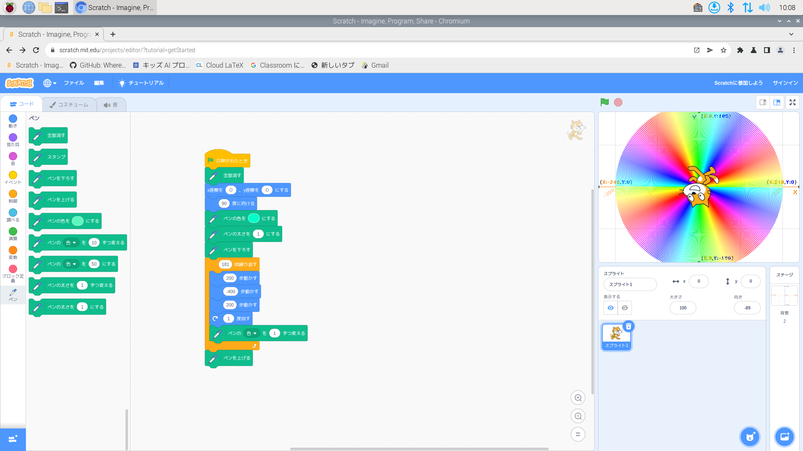

公大高専１年実習I-1レポート
3組17番 佐藤
第1週目
1-1 サイエンスアート

1.内容
スクラッチを用いて色んな色と線で円を描くプログラムを作った
2.感想
角度や回数などの詳しいプログラムを思いの外簡単に作れたためちょっと肩透かしだった
スクラッチを用いて色んな色と線で円を描くプログラムを作った
2.感想
角度や回数などの詳しいプログラムを思いの外簡単に作れたためちょっと肩透かしだった
1-2 ゲーム

1.内容
上から降ってくるリスを猫を操作して受け止めるゲームのプログラムを作った
2.感想
自分の知らなかった新しいブロックを使うことができ、いい経験になった
上から降ってくるリスを猫を操作して受け止めるゲームのプログラムを作った
2.感想
自分の知らなかった新しいブロックを使うことができ、いい経験になった